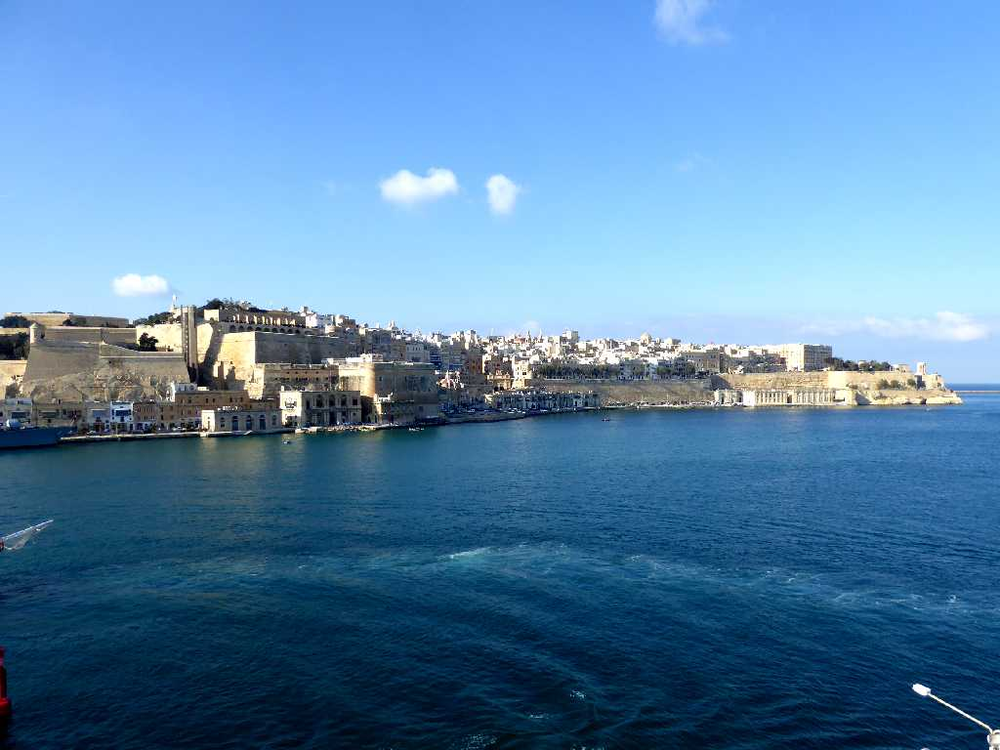
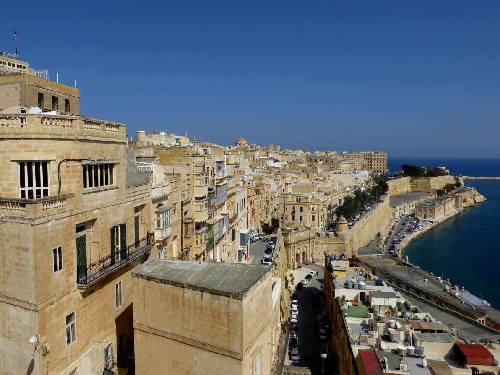
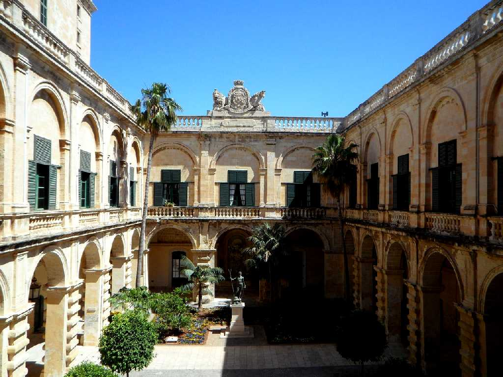
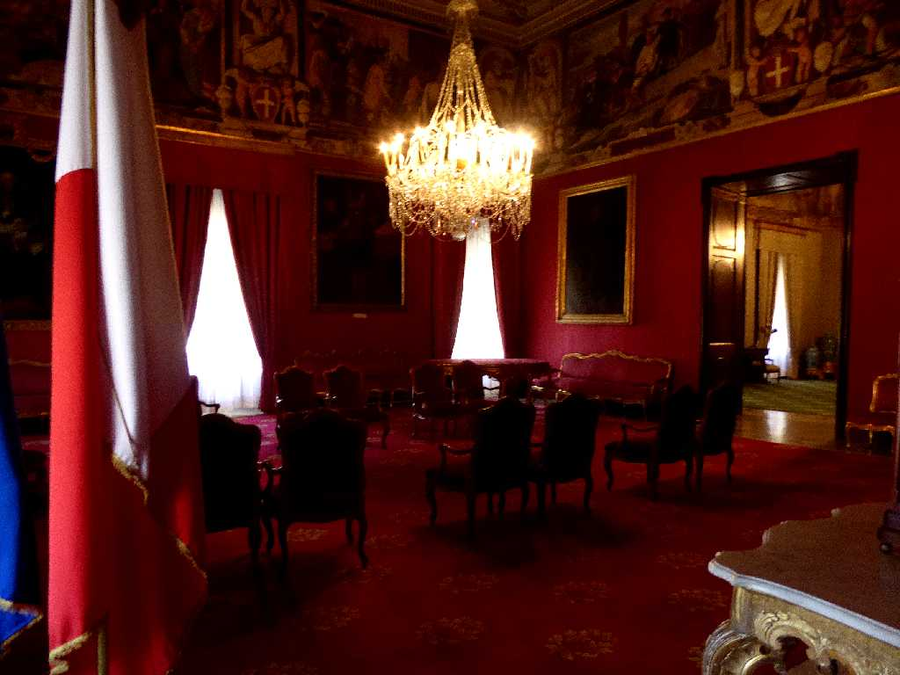
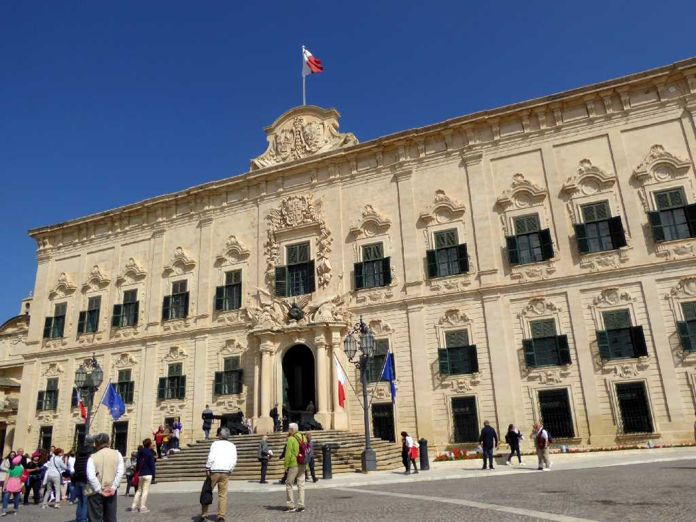
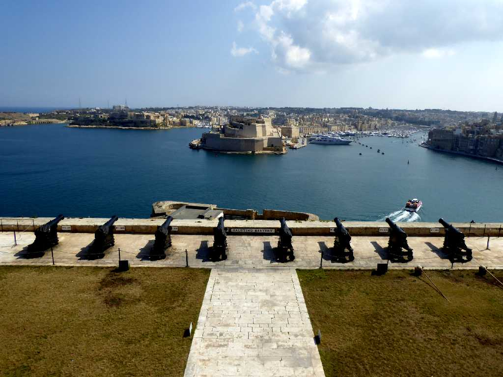

Valletta
１５６６年聖ヨハネ騎士団により勝利の聖母に捧げた聖母教会が置かれた格子状の計画都市で１６世紀の建物が多い

Valletta

The Grand Master Palace
聖ヨハネ騎士団の総長公邸で現在マルタ大統領官邸
State Room The Grand Master Palace
国の公式行事に使われる部屋
Prime Minister Office Auberge De Castille
聖ヨハネ騎士団の宿舎で現在は首相官邸
Grand Harbour The Saluting Battery
岸壁まで水深が深く地中海で最も重要な港と云われるグランドハーバーを望む
March 4 2019 Valletta